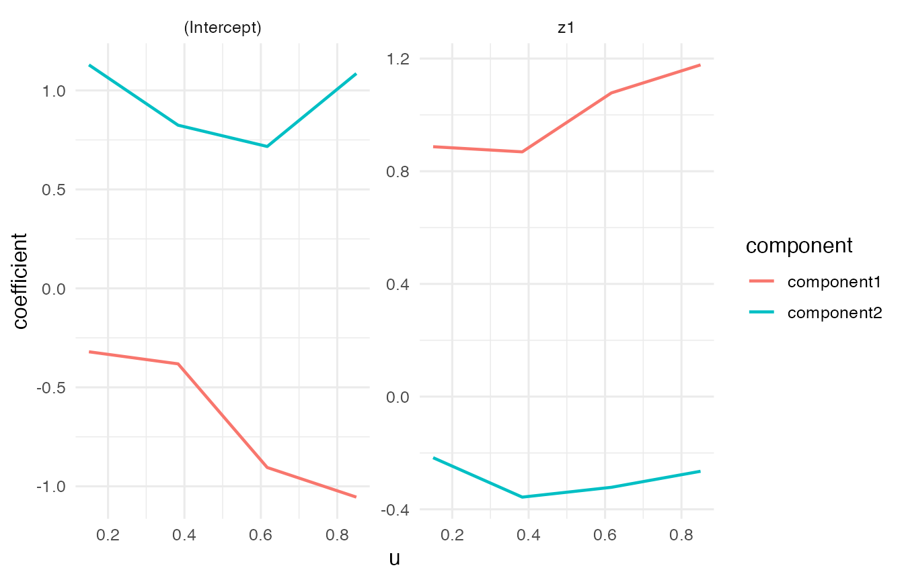
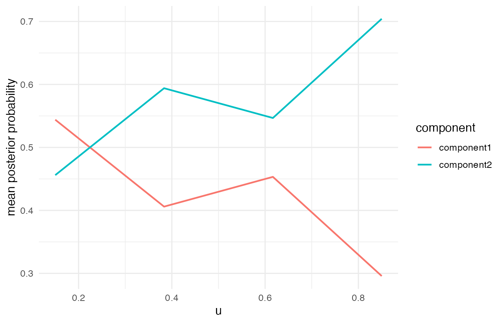
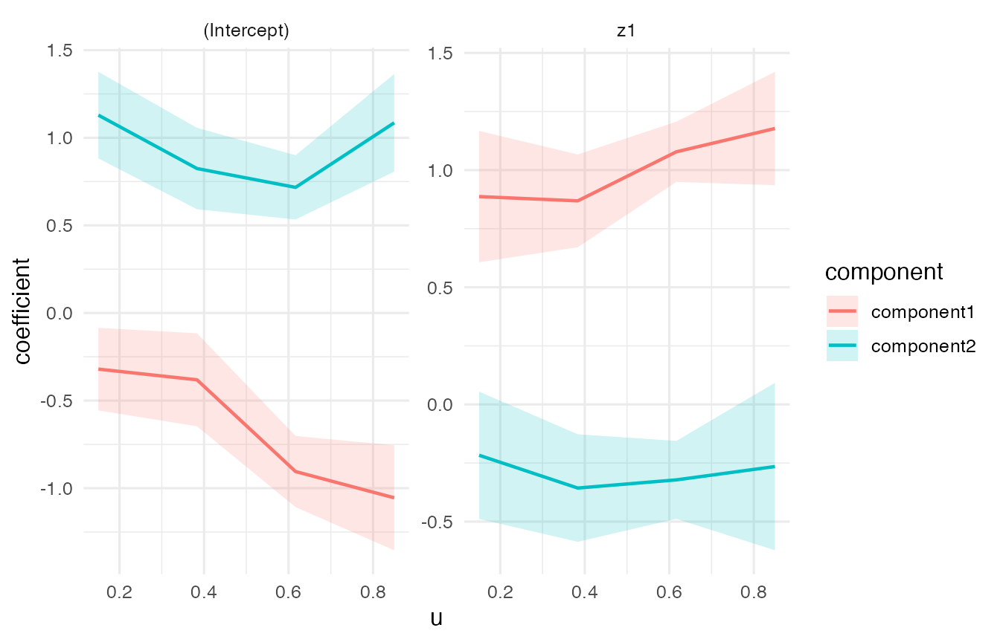
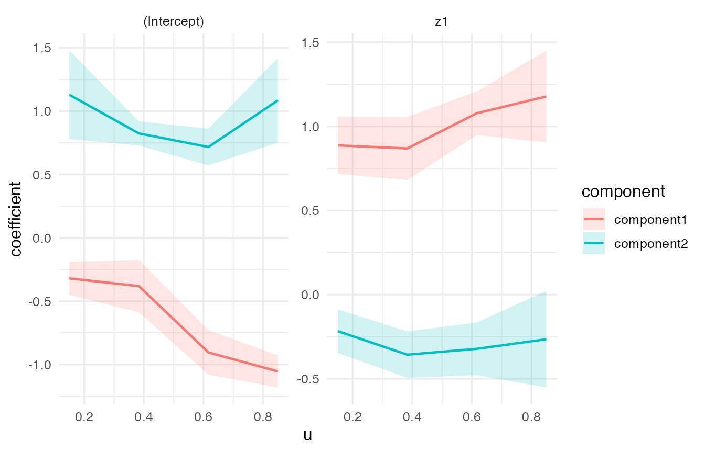

This tutorial gives a compact Gaussian workflow for using VCMoE: simulation, fitting, diagnostics, coefficient plots, analytic simultaneous confidence bands, and bootstrap inference.
Installation from GitHub
Install the package from GitHub with remotes:
install.packages("remotes")
remotes::install_github("qc-zhao/VCMoE")Then load the package:
Gaussian model
Simulate a small Gaussian data set with two latent components. The returned object contains the observed data and the true coefficient functions.
set.seed(1)
sim <- simulate_vcmoe_gaussian(
n = 180,
k = 2,
seed = 1,
separation = 1.6,
scenario = "well_separated"
)
head(sim$data)
#> y u z1 x1 component
#> 1 -1.20538651 0.01307758 -0.5425200 -0.2589326 1
#> 2 0.32147312 0.01339033 1.2078678 0.3943792 1
#> 3 1.16723844 0.02333120 1.1604026 -0.8518571 2
#> 4 -0.06870166 0.03554058 0.7002136 2.6491669 1
#> 5 1.36919490 0.05893438 1.5868335 0.1560117 2
#> 6 1.06597098 0.06178627 0.5584864 1.1302073 2The model formula has two parts:
-
y ~ z1is the component-specific expert mean model; -
| x1is the gating model for component probabilities.
The varying coordinate is supplied through u = "u".
fit <- vcmoe_fit(
y ~ z1 | x1,
data = sim$data,
u = "u",
family = "gaussian",
k = 2,
bandwidth = 0.35,
u_grid = seq(0.15, 0.85, length.out = 4),
control = list(maxit = 60, n_starts = 1, seed = 2, warn_ambiguous = FALSE)
)
fit
#> VCMoE fit
#> family: gaussian
#> components: 2
#> label alignment: global
#> kernel: epanechnikov (density_over_bandwidth)
#> local basis: (u - u0) / bandwidth
#> u scale: unit
#> grid points: 4
#> bandwidth: 0.35
#> converged grid points: 4/4Expert coefficients are returned as an array indexed by grid point, component, and term.
expert_coef <- coef(fit, "expert")
dim(expert_coef)
#> [1] 4 2 2
expert_coef[, , "z1"]
#> component
#> u component1 component2
#> 0.15 0.8870411 -0.2168521
#> 0.38333333 0.8687925 -0.3567810
#> 0.61666667 1.0780929 -0.3219224
#> 0.85 1.1775523 -0.2650091Predictions can be requested as marginal means, posterior component probabilities, or component-specific means.
head(predict(fit, type = "mean"))
#> [1] -0.8016788 0.8411863 0.8640268 0.3781018 0.9534998 1.0079850
head(predict(fit, type = "posterior"))
#> [,1] [,2]
#> [1,] 9.999993e-01 6.984643e-07
#> [2,] 2.238460e-01 7.761540e-01
#> [3,] 7.986774e-02 9.201323e-01
#> [4,] 8.855677e-01 1.144323e-01
#> [5,] 5.576500e-01 4.423500e-01
#> [6,] 4.229101e-05 9.999577e-01
head(predict(fit, type = "component"))
#> component1 component2
#> [1,] -0.8016802 1.2467758
#> [2,] 0.7509857 0.8672005
#> [3,] 0.7088822 0.8774934
#> [4,] 0.3006756 0.9772863
#> [5,] 1.0871439 0.7850209
#> [6,] 0.1749578 1.0080202Diagnostics and basic plots
Always inspect diagnostics before interpreting coefficient functions.
diagnostics <- vcmoe_diagnostics(fit)
diagnostics[, c("u", "converged", "ambiguous", "posterior_entropy", "effective_n")]
#> u converged ambiguous posterior_entropy effective_n
#> 1 0.1500000 TRUE FALSE 0.2020886 75.40914
#> 2 0.3833333 TRUE FALSE 0.2306336 109.36806
#> 3 0.6166667 TRUE FALSE 0.1654692 115.15966
#> 4 0.8500000 TRUE FALSE 0.1324949 79.45137plot_coefficients() and plot_posterior() provide quick visual checks.
plot_coefficients(fit, "expert")
plot_posterior(fit)
Analytic simultaneous confidence bands
vcmoe_confband() computes diagnostic-gated analytic-style Epanechnikov path bands. The returned object contains an interval table and grid-level diagnostics. Rows with status != "ok" are blocked because the local fit is too weak for the interval to be interpreted.
band <- vcmoe_confband(
fit,
data = sim$data,
level = 0.95,
type = "simultaneous",
coefficient_set = "expert",
strict = FALSE
)
band
#> VCMoE analytic-style confidence bands
#> family: gaussian
#> components: 2
#> type: simultaneous
#> level: 0.95
#> interval rows ok: 32/32
head(band$intervals[, c(
"u", "component", "term", "block", "estimate",
"lower", "upper", "status", "block_reason"
)])
#> u component term block estimate lower upper
#> 1 0.15 component1 (Intercept) intercept -0.32044265 -0.5560750 -0.08481032
#> 2 0.15 component1 z1 intercept 0.88704111 0.6068012 1.16728101
#> 3 0.15 component2 (Intercept) intercept 1.12912917 0.8819065 1.37635179
#> 4 0.15 component2 z1 intercept -0.21685213 -0.4883527 0.05464840
#> 5 0.15 component1 (Intercept) slope 0.94748432 0.3255871 1.56938155
#> 6 0.15 component1 z1 slope 0.07598394 -0.5013185 0.65328636
#> status block_reason
#> 1 ok <NA>
#> 2 ok <NA>
#> 3 ok <NA>
#> 4 ok <NA>
#> 5 ok <NA>
#> 6 ok <NA>For coefficient-function plots, use the local-linear intercept rows. The slope rows describe local derivative terms and are not the coefficient functions themselves.
scb_plot <- subset(
band$intervals,
coefficient_set == "expert" & block == "intercept" & status == "ok"
)
ggplot(scb_plot, aes(x = u, y = estimate, color = component, fill = component)) +
geom_ribbon(aes(ymin = lower, ymax = upper), alpha = 0.18, color = NA) +
geom_line(linewidth = 0.8) +
facet_wrap(~ term, scales = "free_y") +
labs(
x = "u",
y = "coefficient",
color = "component",
fill = "component"
) +
theme_minimal(base_size = 12)
Bootstrap inference
Parametric bootstrap inference is also available. Each bootstrap replicate simulates a new response from the fitted mixture, refits the same VCMoE model, and aligns bootstrap component labels back to the reference fit.
boot <- vcmoe_bootstrap(
fit,
data = sim$data,
B = 6,
seed = 5,
min_successful = 2,
control = list(maxit = 40, n_starts = 1, warn_ambiguous = FALSE)
)
boot
#> VCMoE bootstrap inference
#> family: gaussian
#> components: 2
#> bootstrap replicates: 6/6 successful
#> coefficient sets: expert, gating
head(confint(boot, parm = "expert", type = "simultaneous"))
#> coefficient_set term component u estimate se
#> 1 expert (Intercept) component1 0.1500000 -0.3204427 0.04760265
#> 2 expert (Intercept) component1 0.3833333 -0.3813966 0.07480567
#> 3 expert (Intercept) component1 0.6166667 -0.9050922 0.06340877
#> 4 expert (Intercept) component1 0.8500000 -1.0547571 0.04586277
#> 5 expert (Intercept) component2 0.1500000 1.1291292 0.09950992
#> 6 expert (Intercept) component2 0.3833333 0.8243641 0.02707169
#> lower upper type level n_successful
#> 1 -0.4517064 -0.1891789 simultaneous 0.95 6
#> 2 -0.5876723 -0.1751209 simultaneous 0.95 6
#> 3 -1.0799411 -0.7302433 simultaneous 0.95 6
#> 4 -1.1812231 -0.9282911 simultaneous 0.95 6
#> 5 0.7797917 1.4784667 simultaneous 0.95 6
#> 6 0.7293268 0.9194014 simultaneous 0.95 6plot_inference() visualizes bootstrap intervals directly. Here we request simultaneous bootstrap bands for the coefficient paths.
plot_inference(
boot,
coefficient_set = "expert",
type = "simultaneous",
level = 0.95
)
Optional bandwidth selection
For real analyses, bandwidth should usually be selected rather than fixed by hand. The selector uses held-out predictive log-likelihood and returns a final refit by default.
selection <- vcmoe_select_bandwidth(
y ~ z1 | x1,
data = sim$data,
u = "u",
family = "gaussian",
k = 2,
bandwidth_grid = c(0.25, 0.35, 0.45),
folds = 3,
u_grid = seq(0.15, 0.85, length.out = 4),
control = list(maxit = 60, n_starts = 1, seed = 3),
seed = 4
)
selection
selection$best_bandwidth